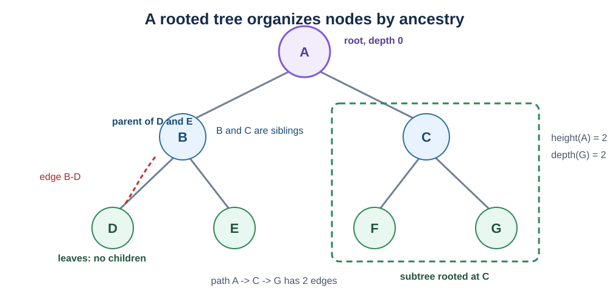
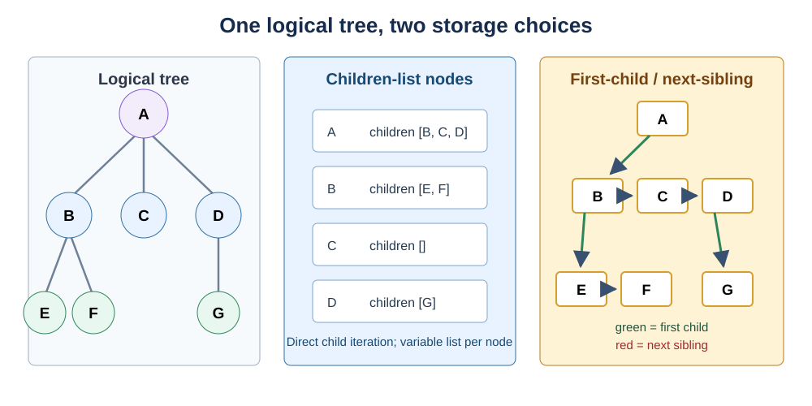
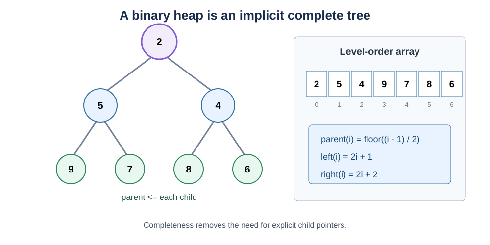
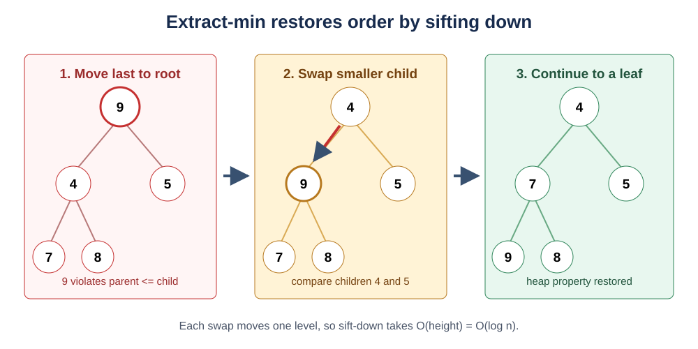
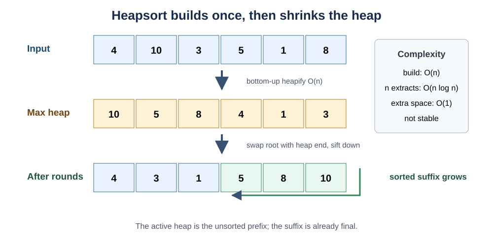

Data Structures and Algorithms: Trees, Search Trees, Heaps, and Priority Queues
Back to Data Structures and Algorithms guideline
Trees, Search Trees, Heaps, and Priority Queues
Linear structures arrange elements along one path. A tree introduces hierarchy: one element may lead to several smaller structures, and the same recursive idea appears again inside every subtree. This makes trees natural for file systems, syntax, indexes, decision processes, search spaces, and hierarchical data.
This chapter separates three ideas that are often blurred together:
- a tree representation determines how nodes and relationships are stored;
- a tree algorithm determines how those nodes are visited or updated;
- an ordering invariant, such as the binary-search-tree or heap property, determines which operations become efficient.
The distinction matters. A binary tree is a shape restriction, a binary search tree adds a global search order, and a binary heap adds a different local priority order. Choosing among them begins with the operation the program must perform quickly, not with the fact that all three can be drawn as trees.
Tree Terminology and Recursive Structure
A tree is a collection of nodes connected by parent-child relationships with no cycle. In a rooted tree, one distinguished node is the root. Every other node has exactly one parent, so there is exactly one simple path from the root to any node. A company organization chart is a useful analogy: the chief executive is the root, departments are subtrees, and a team can be understood without redrawing the rest of the company.
This structure solves problems in which information is naturally nested or choices repeatedly split into smaller choices. Compared with a flat array, a tree records hierarchy directly. Compared with a general graph, a rooted tree has a unique parent relationship, so recursive processing and path reasoning are simpler.

The central terms are:
- The parent of a node is the node immediately above it; its directly connected descendants are its children. Nodes with the same parent are siblings.
- A leaf has no children. An internal node has at least one child.
- An ancestor lies on the path from the root to a node; a descendant lies below that node.
- A subtree rooted at
vcontainsvand all of its descendants. - The depth of
vis the number of edges from the root tov. The root therefore has depth 0. - The height of
vis the maximum number of edges fromvto a leaf. A leaf has height 0, and the tree height is the root height.
The recursive definition is compact: a tree is either empty, or consists of a root whose children are roots of disjoint trees. That definition directly suggests recursive algorithms. To compute the size or height of a tree, solve the same problem on each child subtree and combine the results:
\[ \operatorname{size}(v)=1+\sum_{u\in\operatorname{children}(v)}\operatorname{size}(u), \]
\[ \operatorname{height}(v)= \begin{cases} 0, & v \text{ is a leaf},\\ 1+\max\limits_{u\in\operatorname{children}(v)}\operatorname{height}(u), & \text{otherwise}. \end{cases} \]
Here v is the current node and u ranges over its children. The extra 1 in the size formula counts v; the extra 1 in the height formula counts the edge from v to the selected child.
A general rooted Tree ADT can promise the following behavior independently of its concrete representation:
| ADT operation | Required behavior |
|---|---|
root() |
Return the root, or an empty result for an empty tree. |
parent(v) |
Return the unique parent of non-root node v. |
children(v) |
Iterate over the children of v in the representation’s defined order. |
is_leaf(v) |
Report whether v has no children. |
add_child(v, x) |
Attach a new node carrying x below v. |
remove_subtree(v) |
Detach v and all of its descendants. |
size() / height() |
Return the number of nodes / maximum root-to-leaf edge count. |
The interface alone does not determine every complexity. With parent pointers, parent(v) is \(O(1)\); without them, finding a parent may require an \(O(n)\) traversal. If size and height are not cached, each requires \(O(n)\) time because every node may affect the answer. A recursive implementation uses \(O(h)\) call-stack space, where h is tree height: \(O(\log n)\) for a shallow balanced tree but \(O(n)\) for a chain.
Python implementation: recursive size and height
from dataclasses import dataclass, field
from typing import Generic, TypeVar
T = TypeVar("T")
@dataclass
class TreeNode(Generic[T]):
value: T
children: list["TreeNode[T]"] = field(default_factory=list)
def add_child(self, value: T) -> "TreeNode[T]":
"""Create and attach one child, then return it."""
child = TreeNode(value)
self.children.append(child)
return child
def tree_size(node: TreeNode[T] | None) -> int:
"""Count the current node and every node in its child subtrees."""
if node is None:
return 0
return 1 + sum(tree_size(child) for child in node.children)
def tree_height(node: TreeNode[T] | None) -> int:
"""Return edge-based height; the empty tree is assigned height -1."""
if node is None:
return -1
if not node.children:
return 0
return 1 + max(tree_height(child) for child in node.children)
root = TreeNode("A")
left = root.add_child("B")
root.add_child("C")
left.add_child("D")
assert tree_size(root) == 4
assert tree_height(root) == 2Practice. LeetCode 104 - Maximum Depth of Binary Tree exercises the recursive height definition on the binary-tree special case.
General Trees and Their Implementations
A general tree allows a node to have any number of children. The abstraction fits directory trees, HTML document trees, taxonomies, and game or search trees whose branching factor is not fixed. The important design question is not whether these objects are trees, but how the child relationships should be represented for the operations the application performs most often.

Three representations are especially useful:
- A children-list representation stores a resizable list of child references in every node. Iterating through one node’s children is direct and preserves an explicit child order. The cost is one container per node and potentially expensive removal from the middle of an array-backed child list.
- A first-child/next-sibling representation stores only two links per node.
first_childenters the node’s child list and repeatednext_siblinglinks traverse it. It converts any general tree into a binary-link representation and avoids a variable-sized container inside each node. - A parent array stores
parent[i]for every node indexi. Parent queries are immediate and the representation is compact, but finding all children requires scanning the array unless a reverse index is also maintained.
For a node v with degree d(v), and a tree with n nodes, the structural trade-offs are:
| Operation | Children list | First-child / next-sibling | Parent array only |
|---|---|---|---|
parent(v) |
\(O(1)\) with parent pointer; otherwise \(O(n)\) | \(O(1)\) with parent pointer; otherwise \(O(n)\) | \(O(1)\) |
iterate children(v) |
\(\Theta(d(v))\) | \(\Theta(d(v))\) | \(\Theta(n)\) |
| append child | amortized \(O(1)\) | \(O(1)\) if last-child link is stored; otherwise \(O(d(v))\) | amortized \(O(1)\) for a new indexed node |
| find a particular child | \(O(d(v))\) | \(O(d(v))\) | \(O(n)\) |
| traverse whole tree | \(\Theta(n)\) | \(\Theta(n)\) | \(\Theta(n)\) if child lists are derived efficiently |
| structural storage | \(\Theta(n)\) node links plus list overhead | exactly two structural links per node | one parent index per node |
These are representation costs, not immutable facts about the Tree ADT. Adding a parent pointer or a last-child pointer makes some queries faster by storing more information. The design principle is to cache relationships that are queried frequently and accept update work to keep those caches consistent.
Python implementation: a children-list general tree
from dataclasses import dataclass, field
from typing import Generic, Iterator, TypeVar
T = TypeVar("T")
@dataclass
class GeneralTreeNode(Generic[T]):
value: T
parent: "GeneralTreeNode[T] | None" = field(default=None, repr=False)
children: list["GeneralTreeNode[T]"] = field(default_factory=list)
def add_child(self, value: T) -> "GeneralTreeNode[T]":
"""Append a child and maintain the child's parent link."""
child = GeneralTreeNode(value=value, parent=self)
self.children.append(child)
return child
def detach(self) -> None:
"""Remove this whole subtree from its parent."""
if self.parent is None:
return
self.parent.children.remove(self) # O(degree(parent)) search and shift
self.parent = None
def preorder(node: GeneralTreeNode[T]) -> Iterator[T]:
"""Yield a node before recursively yielding each child subtree."""
yield node.value
for child in node.children:
yield from preorder(child)
root = GeneralTreeNode("course")
week_1 = root.add_child("week 1")
week_1.add_child("lecture")
week_1.add_child("tutorial")
root.add_child("week 2")
assert list(preorder(root)) == [
"course", "week 1", "lecture", "tutorial", "week 2"
]The children-list representation is the most readable default in Python. The first-child/next-sibling form is useful when fixed per-node link count matters, while a parent array is attractive for static indexed hierarchies dominated by upward queries.
Practice. LeetCode 589 - N-ary Tree Preorder Traversal directly exercises recursive traversal over a variable number of children.
Depth-First Traversals
Depth-first traversal (DFS) follows one branch as far as possible before returning to explore the next branch. It is analogous to entering a directory, finishing everything inside it, and only then moving to its sibling directory. DFS is useful when processing a subtree as a unit, evaluating expressions, serializing hierarchy, detecting structural properties, or exploring a search path with limited frontier memory.
For a binary node, the three standard traversal orders differ only in when the current node is processed relative to its left and right subtrees:
- preorder: node, left, right. It is useful for copying or serializing a tree because a parent appears before its descendants;
- inorder: left, node, right. In a binary search tree, it produces keys in sorted order;
- postorder: left, right, node. It is useful when a parent depends on completed child results, such as deleting a tree or computing directory sizes.
The recursive algorithms make that timing explicit:
PREORDER(node)
if node is empty
return
visit(node)
PREORDER(node.left)
PREORDER(node.right)
INORDER(node)
if node is empty
return
INORDER(node.left)
visit(node)
INORDER(node.right)
POSTORDER(node)
if node is empty
return
POSTORDER(node.left)
POSTORDER(node.right)
visit(node)
Open visual source: Wikimedia Commons - Sorted binary tree RGB (CC BY-SA 4.0).
{kind=link}
Every node is entered once and performs constant local work, so all three traversals take \(\Theta(n)\) time for n nodes. Their recursive call stack stores one active frame per level and therefore uses \(O(h)\) auxiliary space, where h is height. The stack is \(O(\log n)\) for a balanced binary tree and \(O(n)\) for a skewed tree. An iterative DFS replaces the language call stack with an explicit stack but does not remove this worst-case frontier requirement.
Python implementation: recursive and iterative DFS orders
from dataclasses import dataclass
from typing import Iterator
@dataclass
class BinaryNode:
value: int
left: "BinaryNode | None" = None
right: "BinaryNode | None" = None
def preorder(node: BinaryNode | None) -> Iterator[int]:
if node is None:
return
yield node.value # Process before both subtrees.
yield from preorder(node.left)
yield from preorder(node.right)
def inorder(node: BinaryNode | None) -> Iterator[int]:
if node is None:
return
yield from inorder(node.left)
yield node.value # Process between the subtrees.
yield from inorder(node.right)
def postorder(node: BinaryNode | None) -> Iterator[int]:
if node is None:
return
yield from postorder(node.left)
yield from postorder(node.right)
yield node.value # Process after both subtrees.
def iterative_preorder(root: BinaryNode | None) -> list[int]:
if root is None:
return []
result: list[int] = []
stack = [root]
while stack:
node = stack.pop()
result.append(node.value)
# Push right first so left is popped and visited first.
if node.right is not None:
stack.append(node.right)
if node.left is not None:
stack.append(node.left)
return result
root = BinaryNode(4, BinaryNode(2), BinaryNode(6))
assert list(preorder(root)) == [4, 2, 6]
assert list(inorder(root)) == [2, 4, 6]
assert list(postorder(root)) == [2, 6, 4]
assert iterative_preorder(root) == [4, 2, 6]Practice. LeetCode 94 - Binary Tree Inorder Traversal is a focused exercise in recursive and explicit-stack DFS.
Breadth-First and Level-Order Traversal
Breadth-first traversal (BFS) visits all nodes at depth d before any node at depth d + 1. Its tree-specific form is called level-order traversal. Imagine examining an organization chart one management level at a time: the current level is the frontier, and its children form the next frontier.
BFS is preferable to DFS when the answer depends on depth order, such as finding the nearest matching node, computing level statistics, filling next-sibling links, or finding a shortest path in an unweighted graph. A FIFO queue is essential because the earliest discovered frontier node must be processed first.
LEVEL-ORDER(root)
if root is empty
return empty result
queue <- FIFO queue containing root
while queue is not empty
level_size <- size(queue)
repeat level_size times
node <- remove_front(queue)
visit(node)
for each child of node
add_back(queue, child)
Capturing level_size before processing the level creates a clean boundary: nodes added during the loop belong to the next level and are not consumed early. Each of n nodes is enqueued and dequeued exactly once, so time is \(\Theta(n)\). The queue stores at most the tree’s maximum width w, giving \(O(w)\) auxiliary space. For a complete tree, the final level may contain about half of all nodes, so the worst case is \(O(n)\) even though BFS is often compact on narrow trees.
Python implementation: preserve explicit level boundaries
from collections import deque
from dataclasses import dataclass
@dataclass
class BinaryNode:
value: int
left: "BinaryNode | None" = None
right: "BinaryNode | None" = None
def level_order(root: BinaryNode | None) -> list[list[int]]:
"""Return one list per depth level."""
if root is None:
return []
result: list[list[int]] = []
queue = deque([root])
while queue:
level: list[int] = []
# The current queue length is exactly the current frontier size.
for _ in range(len(queue)):
node = queue.popleft()
level.append(node.value)
if node.left is not None:
queue.append(node.left)
if node.right is not None:
queue.append(node.right)
result.append(level)
return result
root = BinaryNode(
3,
left=BinaryNode(9),
right=BinaryNode(20, BinaryNode(15), BinaryNode(7)),
)
assert level_order(root) == [[3], [9, 20], [15, 7]]Practice. LeetCode 102 - Binary Tree Level Order Traversal tests both FIFO traversal and correct separation of levels.
Binary Tree Properties
A binary tree restricts every node to two distinguished child positions, left and right. The positions are not interchangeable: a node with only a left child is structurally different from one with only a right child. This fixed arity enables compact recursion, array representations for complete trees, and ordering rules such as those used by binary search trees and heaps.

Common shape descriptions answer different questions:
- A full binary tree gives every node either zero or two children.
- A perfect binary tree is full and has every leaf at the same depth.
- A complete binary tree fills every level except possibly the last, and fills the last level from left to right. Binary heaps require this shape.
- A height-balanced binary tree keeps left and right subtree heights close according to a specified bound. AVL trees use a bound of 1 at every node.
- A skewed tree behaves like a linked list because each internal node has only one child.
Using edge-based height h, level d can contain at most \(2^d\) nodes: each node on the preceding level contributes at most two children. A perfect tree therefore contains
\[ n = 1 + 2 + 2^2 + \cdots + 2^h = 2^{h+1}-1. \]
Here n is node count and h is the number of edges on the longest root-to-leaf path. Solving for h shows why a full, shallow tree has logarithmic height: \(h=\log_2(n+1)-1\). A complete tree with n nodes has \(h=\lfloor\log_2 n\rfloor\). A skewed tree instead has \(h=n-1\), which turns algorithms that cost \(O(h)\) from logarithmic into linear time.
The Binary Tree ADT typically exposes left(v), right(v), parent(v), attach_left, attach_right, and subtree detachment. With direct references, child access and attachment are \(O(1)\). Searching by value is still \(O(n)\) because a plain binary tree has no search-order invariant. Storing all n nodes requires \(\Theta(n)\) space.
Balance can be checked bottom-up. Each subtree returns its height; a node is balanced only if both child subtrees are balanced and their heights differ by at most one. Combining both results in one postorder traversal avoids repeatedly recomputing heights.
Python implementation: one-pass size, height, and balance summary
from dataclasses import dataclass
@dataclass
class BinaryNode:
value: int
left: "BinaryNode | None" = None
right: "BinaryNode | None" = None
def summarize(node: BinaryNode | None) -> tuple[int, int, bool]:
"""Return (size, edge-based height, AVL-style balance)."""
if node is None:
# Height -1 makes a leaf's height become 0 after adding one.
return 0, -1, True
left_size, left_height, left_ok = summarize(node.left)
right_size, right_height, right_ok = summarize(node.right)
size = 1 + left_size + right_size
height = 1 + max(left_height, right_height)
balanced = (
left_ok
and right_ok
and abs(left_height - right_height) <= 1
)
return size, height, balanced
root = BinaryNode(
8,
left=BinaryNode(4, BinaryNode(2), BinaryNode(6)),
right=BinaryNode(12),
)
assert summarize(root) == (5, 2, True)
root.left.left.left = BinaryNode(1)
assert summarize(root) == (6, 3, False)The combined traversal takes \(\Theta(n)\) time because each node contributes once, and \(O(h)\) stack space. A naive version that separately recomputes height at every node can take \(O(n^2)\) on a skewed tree.
Practice. LeetCode 110 - Balanced Binary Tree rewards this bottom-up, single-pass formulation.
Binary Search Trees
A binary search tree (BST) is a binary tree with an ordering invariant. For every node with key k, every key in its left subtree is smaller than k, and every key in its right subtree is larger than k. If duplicate keys are allowed, the implementation must define one consistent policy, such as storing a count in the existing node; silently placing duplicates on arbitrary sides can break search and validation logic.
The invariant turns comparison into elimination. At a node, one comparison either finishes the search or discards an entire subtree. This is why a shallow BST behaves like binary search while still supporting insertion and deletion without shifting an array suffix. It is useful for ordered sets and maps that need search together with minimum, maximum, predecessor, successor, or sorted iteration.

Open visual source: Wikimedia Commons - Binary search tree (public domain).
{kind=link}
The ordered Set/Map ADT supported by a BST includes:
| ADT operation | Required behavior |
|---|---|
search(k) |
Return the item associated with k, or not-found. |
insert(k, value) |
Add a key-value pair while preserving the ordering invariant. |
delete(k) |
Remove k while preserving the invariant. |
minimum() / maximum() |
Return the leftmost / rightmost key. |
predecessor(k) / successor(k) |
Return the adjacent smaller / larger key when it exists. |
iterate_sorted() |
Produce all keys in ascending order. |
Search and insertion follow one root-to-leaf path. Deletion has three structural cases:
- A leaf is detached directly.
- A node with one child is replaced by that child.
- A node with two children is replaced by its inorder successor, the minimum node in its right subtree, and that successor is then deleted from its original position. The successor has no left child, so the second deletion reduces to case 1 or 2.
For tree height h, the costs are:
| Operation | Cost | Why |
|---|---|---|
search, insert, delete |
\(O(h)\) | Each comparison moves down one level. |
minimum / maximum |
\(O(h)\) | Follow only left / right references. |
| sorted traversal | \(\Theta(n)\) | Every node is emitted once by inorder traversal. |
| storage | \(\Theta(n)\) | One node and a constant number of links per key. |
If insertion order keeps the tree reasonably balanced, h is \(O(\log n)\). Inserting already sorted keys into an ordinary BST creates a chain with h=n-1, making search, insertion, and deletion \(O(n)\). This dependence on shape is the main reason self-balancing search trees exist.
Python implementation: search, insertion, deletion, and sorted iteration
from dataclasses import dataclass
from typing import Iterator
@dataclass
class BSTNode:
key: int
left: "BSTNode | None" = None
right: "BSTNode | None" = None
class BinarySearchTree:
def __init__(self) -> None:
self.root: BSTNode | None = None
def search(self, key: int) -> BSTNode | None:
current = self.root
while current is not None:
if key == current.key:
return current
# The BST invariant safely discards one whole subtree.
current = current.left if key < current.key else current.right
return None
def insert(self, key: int) -> None:
def insert_from(node: BSTNode | None, key: int) -> BSTNode:
if node is None:
return BSTNode(key)
if key < node.key:
node.left = insert_from(node.left, key)
elif key > node.key:
node.right = insert_from(node.right, key)
# Duplicate keys are ignored: this class implements a set.
return node
self.root = insert_from(self.root, key)
def delete(self, key: int) -> None:
def delete_from(node: BSTNode | None, key: int) -> BSTNode | None:
if node is None:
return None
if key < node.key:
node.left = delete_from(node.left, key)
elif key > node.key:
node.right = delete_from(node.right, key)
else:
if node.left is None: # Zero or one child.
return node.right
if node.right is None:
return node.left
# Two children: copy the inorder successor's key.
successor = node.right
while successor.left is not None:
successor = successor.left
node.key = successor.key
node.right = delete_from(node.right, successor.key)
return node
self.root = delete_from(self.root, key)
def inorder(self) -> Iterator[int]:
def walk(node: BSTNode | None) -> Iterator[int]:
if node is not None:
yield from walk(node.left)
yield node.key
yield from walk(node.right)
yield from walk(self.root)
tree = BinarySearchTree()
for key in [8, 3, 10, 1, 6, 14, 4, 7, 13]:
tree.insert(key)
assert tree.search(7) is not None
assert list(tree.inorder()) == [1, 3, 4, 6, 7, 8, 10, 13, 14]
tree.delete(3) # Deletes a node with two children.
assert list(tree.inorder()) == [1, 4, 6, 7, 8, 10, 13, 14]Practice. LeetCode 98 - Validate Binary Search Tree tests the global subtree invariant; comparing only a node with its immediate children is not sufficient.
Balanced Search Trees and AVL Rotations
A self-balancing search tree preserves the BST ordering invariant while preventing its height from growing into a chain. An AVL tree measures, at every node v, the balance factor
\[ \operatorname{bf}(v)=\operatorname{height}(v.\text{left})-\operatorname{height}(v.\text{right}). \]
The left and right terms are the edge-based heights of the two child subtrees. An AVL node is balanced when its factor is -1, 0, or 1. Insertion or deletion may push a factor to 2 or -2; a rotation then changes a constant number of links without changing the inorder key sequence.
Rotations are needed because merely detecting imbalance does not restore logarithmic search. They move the middle key of an imbalanced three-key configuration upward, preserving all BST inequalities. A single rotation handles an outer-heavy path (LL or RR), while a double rotation handles an inner-heavy path (LR or RL).
REBALANCE(node)
update node.height from its children
balance <- height(node.left) - height(node.right)
if balance > 1
if balance_factor(node.left) < 0
node.left <- ROTATE-LEFT(node.left) // LR case
return ROTATE-RIGHT(node) // LL after optional fix
if balance < -1
if balance_factor(node.right) > 0
node.right <- ROTATE-RIGHT(node.right) // RL case
return ROTATE-LEFT(node) // RR after optional fix
return node
The AVL tree implements the same ordered Set/Map ADT as a BST. Its representation adds a cached height to each node, and every mutation must keep that metadata correct. A left or right rotation changes only a constant number of references and recomputes two heights, so one rotation is \(O(1)\). The AVL height is \(O(\log n)\), giving the following worst-case guarantees:
| Operation | AVL cost | Ordinary unbalanced BST |
|---|---|---|
search |
\(O(\log n)\) | \(O(n)\) worst case |
insert |
\(O(\log n)\) | \(O(n)\) worst case |
delete |
\(O(\log n)\) | \(O(n)\) worst case |
| rotation itself | \(O(1)\) | not provided |
| sorted traversal | \(\Theta(n)\) | \(\Theta(n)\) |
| storage | \(\Theta(n)\) | \(\Theta(n)\) |
AVL trees are especially suitable for ordered dictionaries with frequent searches and predictable latency. Their stricter balance can require more rebalancing than a red-black tree, but it also tends to produce shallower searches.
Python implementation: AVL insertion and all four rotation cases
from dataclasses import dataclass
@dataclass
class AVLNode:
key: int
height: int = 1 # Node-based height simplifies updates.
left: "AVLNode | None" = None
right: "AVLNode | None" = None
def height(node: AVLNode | None) -> int:
return node.height if node is not None else 0
def update_height(node: AVLNode) -> None:
node.height = 1 + max(height(node.left), height(node.right))
def balance_factor(node: AVLNode) -> int:
return height(node.left) - height(node.right)
def rotate_right(top: AVLNode) -> AVLNode:
new_top = top.left
assert new_top is not None
moved_subtree = new_top.right
# Preserve inorder order: moved_subtree lies between the two keys.
new_top.right = top
top.left = moved_subtree
update_height(top) # Update lower node first.
update_height(new_top)
return new_top
def rotate_left(top: AVLNode) -> AVLNode:
new_top = top.right
assert new_top is not None
moved_subtree = new_top.left
new_top.left = top
top.right = moved_subtree
update_height(top)
update_height(new_top)
return new_top
def insert(node: AVLNode | None, key: int) -> AVLNode:
# Ordinary BST insertion first.
if node is None:
return AVLNode(key)
if key < node.key:
node.left = insert(node.left, key)
elif key > node.key:
node.right = insert(node.right, key)
else:
return node # Set semantics: ignore duplicates.
update_height(node)
balance = balance_factor(node)
if balance > 1:
assert node.left is not None
if key > node.left.key: # Left-right case.
node.left = rotate_left(node.left)
return rotate_right(node)
if balance < -1:
assert node.right is not None
if key < node.right.key: # Right-left case.
node.right = rotate_right(node.right)
return rotate_left(node)
return node
def inorder(node: AVLNode | None) -> list[int]:
if node is None:
return []
return inorder(node.left) + [node.key] + inorder(node.right)
root: AVLNode | None = None
for key in [30, 10, 20, 40, 50]: # Triggers LR and RR repairs.
root = insert(root, key)
assert inorder(root) == [10, 20, 30, 40, 50]
assert root is not None and abs(balance_factor(root)) <= 1Practice. LeetCode 1382 - Balance a Binary Search Tree reinforces the relationship between sorted inorder order and logarithmic-height reconstruction.
Binary Heaps and Heapify
A binary heap combines two invariants:
- the shape property: it is a complete binary tree;
- the heap-order property: in a min-heap, every parent key is no larger than either child key. A max-heap reverses the comparison.
The heap-order property is deliberately weaker than BST order. It guarantees that the minimum is at the min-heap root, but it says nothing about the ordering between siblings or across different subtrees. That weaker promise is enough for fast priority removal and allows a compact array representation.

For zero-based array index i, the relationships are
\[ \operatorname{parent}(i)=\left\lfloor\frac{i-1}{2}\right\rfloor,\qquad \operatorname{left}(i)=2i+1,\qquad \operatorname{right}(i)=2i+2. \]
Completeness ensures there are no gaps before the last occupied array slot. Therefore no explicit child pointers are required, and the representation uses \(\Theta(n)\) contiguous storage.
The min-heap ADT provides:
| Operation | Required behavior | Cost |
|---|---|---|
peek_min() |
Return the root without removing it. | \(O(1)\) |
push(x) |
Add x and restore heap order by sifting upward. |
\(O(\log n)\) |
pop_min() |
Remove the root, move the last item to the root, and sift downward. | \(O(\log n)\) |
heapify(values) |
Rearrange all values into a valid heap. | \(O(n)\) bottom-up |
search(x) |
Find an arbitrary value. | \(O(n)\) |
| storage | Keep all heap items. | \(\Theta(n)\) |
Insertion appends at the only position that preserves completeness, then compares upward. Extract-min fills the root hole with the final item, then repeatedly swaps it with its smaller child:
SIFT-DOWN(heap, i)
while i has at least one child
child <- index of the smaller child
if heap[i] <= heap[child]
stop
swap heap[i] and heap[child]
i <- child
BUILD-MIN-HEAP(values)
for i from parent(last_index) down to 0
SIFT-DOWN(values, i)
Each sift follows at most one root-to-leaf path, so it costs \(O(h)=O(\log n)\) in a complete tree. Bottom-up heap construction is \(O(n)\) rather than \(O(n\log n)\). The reason is that most nodes are near the leaves and move very little: approximately n/2 leaves require no work, n/4 nodes can move at most one level, n/8 at most two levels, and the weighted sum is linear.
Python implementation: array-backed min-heap
from collections.abc import Iterable
class MinHeap:
def __init__(self, values: Iterable[int] = ()) -> None:
self._data = list(values)
# Leaves are already one-item heaps. Repair internal nodes bottom-up.
for index in range(len(self._data) // 2 - 1, -1, -1):
self._sift_down(index)
def __len__(self) -> int:
return len(self._data)
def peek_min(self) -> int:
if not self._data:
raise IndexError("peek from empty heap")
return self._data[0]
def push(self, value: int) -> None:
self._data.append(value) # Preserves complete-tree shape.
self._sift_up(len(self._data) - 1)
def pop_min(self) -> int:
if not self._data:
raise IndexError("pop from empty heap")
minimum = self._data[0]
last = self._data.pop()
if self._data:
self._data[0] = last # Fill the root hole.
self._sift_down(0)
return minimum
def _sift_up(self, index: int) -> None:
while index > 0:
parent = (index - 1) // 2
if self._data[parent] <= self._data[index]:
break
self._data[parent], self._data[index] = (
self._data[index], self._data[parent]
)
index = parent
def _sift_down(self, index: int) -> None:
size = len(self._data)
while True:
left = 2 * index + 1
right = left + 1
smallest = index
if left < size and self._data[left] < self._data[smallest]:
smallest = left
if right < size and self._data[right] < self._data[smallest]:
smallest = right
if smallest == index:
return
self._data[index], self._data[smallest] = (
self._data[smallest], self._data[index]
)
index = smallest
heap = MinHeap([9, 4, 7, 1, 3, 6])
heap.push(2)
assert [heap.pop_min() for _ in range(len(heap))] == [1, 2, 3, 4, 6, 7, 9]Use Python’s optimized heapq in application code; the class above exposes the index arithmetic and repair process that the library hides.
Practice. LeetCode 215 - Kth Largest Element in an Array can be solved with a bounded min-heap or an in-place heap-based selection strategy.
Priority Queues
A priority queue is an Abstract Data Type in which removal is determined by priority rather than arrival time or index. A hospital triage queue is the usual analogy: a later patient with greater urgency may be served before an earlier low-urgency patient. The ADT specifies the behavior; it does not require a heap. An unsorted array, sorted array, balanced search tree, or binary heap can all implement the same contract with different costs.
Each entry normally contains an item and a comparable priority. A min-priority queue removes the smallest priority; a max-priority queue removes the largest. Equal priorities require an explicit policy. A stable priority queue uses insertion order as a secondary key so equal-priority entries leave in FIFO order.
The main operations are:
| ADT operation | Required behavior |
|---|---|
insert(item, priority) |
Add an item with its priority. |
peek_best() |
Return, but do not remove, the highest-priority entry. |
extract_best() |
Remove and return the highest-priority entry. |
update_priority(item, p) |
Replace an existing item’s priority while preserving the queue contract. |
is_empty() / size() |
Report queue state. |

For n active entries, common implementations compare as follows:
| Representation | Insert | Peek best | Extract best | Search/update arbitrary item | Structural advantage |
|---|---|---|---|---|---|
| unsorted array/list | \(O(1)\) | \(O(n)\) | \(O(n)\) | \(O(n)\) | Cheapest insertion |
| sorted array/list | \(O(n)\) | \(O(1)\) | \(O(1)\) at an end | \(O(\log n)\) search, but \(O(n)\) movement | Fast repeated reads/removals |
| balanced search tree | \(O(\log n)\) | \(O(\log n)\) or \(O(1)\) with cached extreme | \(O(\log n)\) | \(O(\log n)\) | Supports full ordered-map operations |
| binary heap | \(O(\log n)\) | \(O(1)\) | \(O(\log n)\) | \(O(n)\) without an index map | Compact and excellent for repeated best-item access |
The heap is the usual default because it gives a strong balance for scheduling, graph frontiers, event simulation, and streaming selection. If arbitrary priority updates are frequent, an auxiliary item-to-index map can locate entries in \(O(1)\) before a logarithmic sift. Python’s heapq does not maintain such a map, so a common alternative is lazy deletion: mark the old entry inactive, push a replacement, and skip stale entries when they reach the root.
Python implementation: stable priorities with lazy updates
import heapq
import itertools
from typing import Any
class StablePriorityQueue:
"""A min-priority queue with FIFO ties and lazy priority updates."""
_REMOVED = object()
def __init__(self) -> None:
self._heap: list[list[Any]] = []
self._active: dict[str, list[Any]] = {}
self._sequence = itertools.count()
def __len__(self) -> int:
return len(self._active)
def put(self, item: str, priority: float) -> None:
if item in self._active:
self.remove(item) # Invalidate the old version.
entry: list[Any] = [priority, next(self._sequence), item]
self._active[item] = entry
heapq.heappush(self._heap, entry)
def remove(self, item: str) -> None:
entry = self._active.pop(item)
entry[2] = self._REMOVED # Leave a harmless stale entry.
def pop(self) -> tuple[str, float]:
while self._heap:
priority, _, item = heapq.heappop(self._heap)
if item is not self._REMOVED:
del self._active[item]
return item, priority
raise IndexError("pop from empty priority queue")
queue = StablePriorityQueue()
queue.put("write report", 3)
queue.put("fix production issue", 1)
queue.put("review notes", 3) # Same priority, inserted later.
queue.put("write report", 0) # Lazy priority update.
assert queue.pop() == ("write report", 0)
assert queue.pop() == ("fix production issue", 1)
assert queue.pop() == ("review notes", 3)Heap insertion and extraction remain \(O(\log m)\) where m includes active and stale heap entries. Lazy deletion is amortized-efficient, but a long-running system should periodically rebuild the heap when stale entries greatly outnumber active ones.
Practice. LeetCode 621 - Task Scheduler develops the scheduling interpretation of a max-priority queue together with cooldown constraints.
Priority-Queue-Based Sorting
Priority queues suggest a simple sorting strategy: insert every value and repeatedly extract the smallest. With a binary heap, this takes \(O(n\log n)\) time and \(O(n)\) extra storage. Heapsort refines the idea by building a max-heap inside the input array and moving each maximum directly to its final array position, reducing auxiliary space to \(O(1)\).
The unsorted prefix is treated as a heap and the sorted suffix grows from right to left:
HEAPSORT(values)
BUILD-MAX-HEAP(values)
for end from length(values) - 1 down to 1
swap values[0] and values[end] // maximum reaches final position
SIFT-DOWN(values, root=0, heap_size=end)
BUILD-MAX-HEAP(values)
for i from parent(last_index) down to 0
SIFT-DOWN(values, i, length(values))
Bottom-up construction costs \(O(n)\). The extraction loop runs n - 1 times, and each sift-down costs at most \(O(\log n)\), so total time is \(O(n\log n)\) in the best, average, and worst cases. The array representation makes the algorithm in-place, with \(O(1)\) auxiliary storage in an iterative implementation.
Heapsort offers a worst-case guarantee that quicksort does not provide without careful pivot handling, and it uses less extra memory than standard merge sort. Its disadvantages are weaker cache locality than quicksort and lack of stability: swapping distant heap elements can reverse the original order of equal keys.
Python implementation: in-place ascending heapsort
def heapsort(values: list[int]) -> None:
"""Sort values in ascending order using an in-place max-heap."""
def sift_down(root: int, heap_size: int) -> None:
while True:
left = 2 * root + 1
right = left + 1
largest = root
if left < heap_size and values[left] > values[largest]:
largest = left
if right < heap_size and values[right] > values[largest]:
largest = right
if largest == root:
return
values[root], values[largest] = values[largest], values[root]
root = largest
# Convert the complete array tree into a max-heap in O(n).
for index in range(len(values) // 2 - 1, -1, -1):
sift_down(index, len(values))
# Move each maximum to the end, then repair the shorter heap prefix.
for end in range(len(values) - 1, 0, -1):
values[0], values[end] = values[end], values[0]
sift_down(0, end)
numbers = [12, 11, 13, 5, 6, 7, 6]
heapsort(numbers)
assert numbers == [5, 6, 6, 7, 11, 12, 13]In Python applications, list.sort() is normally the better engineering choice because Timsort is stable and highly optimized. Implementing heapsort remains valuable for understanding how a Priority Queue ADT can become a complete in-place sorting algorithm.
Practice. LeetCode 912 - Sort an Array provides a direct setting for implementing and comparing \(O(n\log n)\) sorting algorithms.
Top-K and Merge-K Patterns
Two recurring heap patterns keep only the part of a large search space that can still affect the answer. Both use a heap as a compact frontier, but they preserve different invariants.
For Top-K, a min-heap of at most k elements stores the largest k values seen so far. The root is the weakest retained candidate. A new value no larger than the root cannot enter the final Top-K and is discarded; a larger value replaces the root.
TOP-K-LARGEST(stream, k)
candidates <- empty min-heap
for value in stream
if size(candidates) < k
push(candidates, value)
else if value > peek_min(candidates)
replace_min(candidates, value)
return candidatesFor Merge-K, each input sequence is already sorted. Only its first unconsumed value can be the next global minimum, so the heap stores one frontier item per non-empty sequence. After extracting one item, only its successor from the same sequence becomes newly eligible.
MERGE-K-SORTED(sequences)
frontier <- empty min-heap
push the first item of every non-empty sequence into frontier
while frontier is not empty
value, source, position <- extract_min(frontier)
output value
if source has an item at position + 1
push that successor into frontier
For a stream of n values, bounded Top-K takes \(O(n\log k)\) time and \(O(k)\) space. Sorting the retained candidates afterward adds \(O(k\log k)\). This is better than sorting all input values in \(O(n\log n)\) when k is much smaller than n, and it works online without retaining the complete stream.
For k sorted sequences containing N values in total, Merge-K takes \(O(N\log k)\) time and \(O(k)\) heap space. A naive scan across all k current heads for every output would take \(O(Nk)\). The heap improves the selection of the next head without losing the sorted-frontier invariant.
Python implementation: bounded Top-K and frontier-based Merge-K
import heapq
from collections.abc import Iterable, Sequence
def top_k_largest(values: Iterable[int], k: int) -> list[int]:
"""Return the k largest values in descending order."""
if k < 0:
raise ValueError("k must be non-negative")
if k == 0:
return []
candidates: list[int] = []
for value in values:
if len(candidates) < k:
heapq.heappush(candidates, value)
elif value > candidates[0]:
# Remove the weakest retained candidate and add the better one.
heapq.heapreplace(candidates, value)
return sorted(candidates, reverse=True)
def merge_k_sorted(sequences: Sequence[Sequence[int]]) -> list[int]:
"""Merge sorted sequences while storing one frontier item per source."""
frontier: list[tuple[int, int, int]] = []
for source, sequence in enumerate(sequences):
if sequence:
# Tuple order breaks equal-value ties by source and position.
heapq.heappush(frontier, (sequence[0], source, 0))
merged: list[int] = []
while frontier:
value, source, position = heapq.heappop(frontier)
merged.append(value)
next_position = position + 1
if next_position < len(sequences[source]):
next_value = sequences[source][next_position]
heapq.heappush(frontier, (next_value, source, next_position))
return merged
assert top_k_largest([5, 1, 9, 3, 14, 8], 3) == [14, 9, 8]
assert merge_k_sorted([[1, 4, 9], [2, 6], [3, 5, 7]]) == [1, 2, 3, 4, 5, 6, 7, 9]Practice for Top-K. LeetCode 347 - Top K Frequent Elements applies bounded candidate selection after frequency counting.
Practice for Merge-K. LeetCode 23 - Merge k Sorted Lists applies the one-frontier-item-per-source invariant to linked lists.
Comparison and Selection
The structures in this chapter are not interchangeable. Their diagrams look similar because they are hierarchical, but each invariant accelerates a different family of operations.
| Need | Best starting point | Main reason | Important limitation |
|---|---|---|---|
| represent arbitrary hierarchy | general tree with child lists | direct variable-arity structure | no automatic search order |
| process complete subtrees | DFS / postorder | child results combine naturally | recursive stack can reach \(O(n)\) |
| process by depth or find nearest unweighted result | BFS / level order | queue preserves discovery depth | frontier can require \(O(n)\) space |
| ordered search, range queries, predecessor/successor | balanced BST | all ordered-map operations are \(O(\log n)\) | more links and rebalancing logic |
| repeatedly access only minimum or maximum | binary heap | \(O(1)\) peek and \(O(\log n)\) updates | arbitrary search and full sorted iteration are weak |
| expose priority-based behavior | Priority Queue ADT | separates scheduling contract from representation | complexity depends on implementation |
| sort in place with worst-case guarantee | heapsort | \(O(n\log n)\) worst case and \(O(1)\) auxiliary space | not stable and often less cache-friendly |
| retain a small best subset from a stream | bounded heap | \(O(n\log k)\) time and \(O(k)\) memory | output is not fully ordered until sorted |
A practical selection sequence is:
- Identify the dominant operation: hierarchy traversal, ordered lookup, or repeated extreme extraction.
- State the invariant that makes that operation efficient.
- Check the worst-case shape. An ordinary BST offers no protection against a chain; a complete heap and an AVL tree do.
- Include representation costs. Parent pointers, cached heights, index maps, and stable tie counters improve operations but must be maintained during updates.
- Analyze with the right parameter:
nfor total nodes,hfor a root-to-leaf path,wfor BFS frontier width, andkfor a bounded candidate/frontier heap.
The central lesson is that shape alone does not create efficiency. A tree becomes useful when its representation and invariant match the queries the application must answer.
Practice. LeetCode 230 - Kth Smallest Element in a BST combines the BST ordering invariant with inorder traversal; an augmented subtree-size field can support repeated rank queries more efficiently.